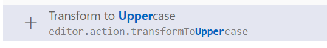
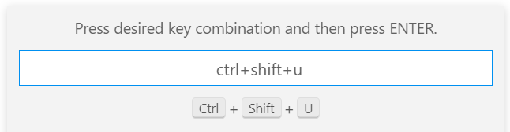

Make selected block of text uppercase
Can I make a multi-line selection of text all capitals in Visual Studio Code?
In full Visual Studio it's CTRL+SHIFT+U to do this.
The extension that exists that I have seen only do non-multi-line blocks.
NOTE: THE UI OF VISUAL STUDIO CODE WHEN THIS QUESTION WAS ASKED (5 OR MORE YEARS AGO) HAS CHANGED.
Answer
The question is about how to make CTRL+SHIFT+U work in Visual Studio
Code. Here is how to do it in version 1.57.1 or above.
Steps:
-
Open Visual Studio Code.
-
Press
CTRL+SHIFT+P. -
Type
open keyboard shortcuts
-
Select
Open keyboard shortcuts (json)
An editor will appear with keybindings.json file. Place the following JSON in there and save:
[
{
"key": "ctrl+shift+u",
"command": "editor.action.transformToUppercase",
"when": "editorTextFocus"
},
{
"key": "ctrl+shift+l",
"command": "editor.action.transformToLowercase",
"when": "editorTextFocus"
}
]
Now CTRL+SHIFT+U will capitalise selected text, even if multi line. In
the same way, CTRL+SHIFT+L will make selected text lowercase.
These commands are built into VS Code and no extensions are required to make them work.
Update August 2021
There is a UI to see and update keyboard shortcuts:
File- > Preferences -> Keyboard Shortcuts.
- Find "Transform to Uppercase":

-
Click the
+icon. -
In the popup, press the desired key combination and hit enter:

Do the same for lower case.
Note
In the new versions (eg 1.57.x) of VS Code,Ctrl+Shift+L is a shortcut
for bulk selecting all selected text occurrences. So you can use another
combination, like Ctrl+Shift+/ etc.
Suggest
Whenever you want to do something in VS Code and don't know how, it's a good
idea to bring up the command palette with CTRL+SHIFT+P
(CMD+SHIFT+P on mac), and try typing in a keyword for you want.
Oftentimes the command will show up there so you don't have to go searching
the net for how to do something.
Highlight the text you want to uppercase. Then hit CTRL+SHIFT+P to bring
up the command palette. Then start typing the word "uppercase", and you'll see
the Transform to Uppercase command. Click that and it will make your text
uppercase.